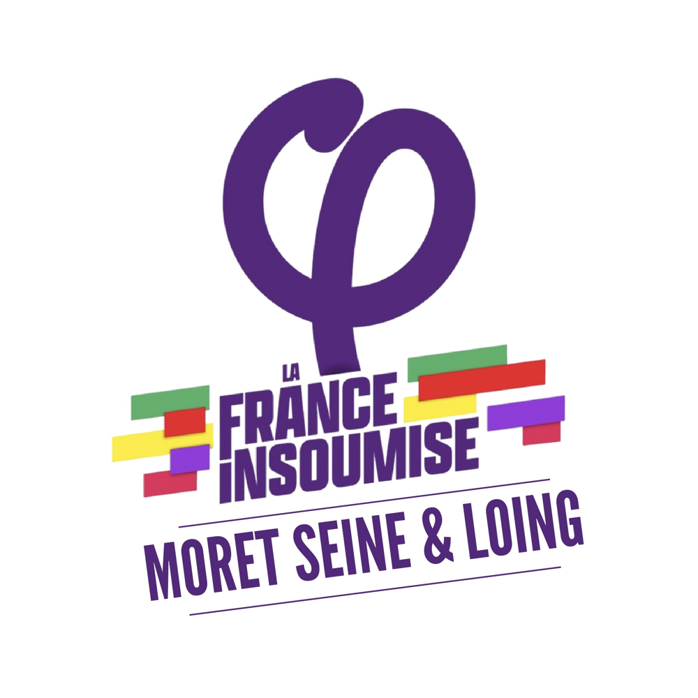

La Piqûre de Rappel est le journal du
Groupe d’Action Insoumis·es Seine & Loing.
Depuis 2022, il relaie nos luttes, nos analyses et nos initiatives politiques.
Sa vocation : informer les habitantes et habitants sur les enjeux locaux et nationaux, proposer une lecture critique des événements, et faire vivre une parole libre, indépendante des grands médias.
Retrouvez ci-dessous l’ensemble des numéros publiés depuis sa création.